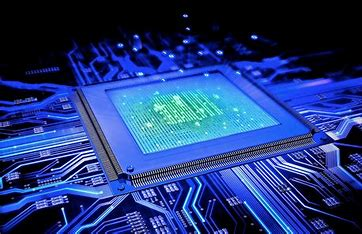
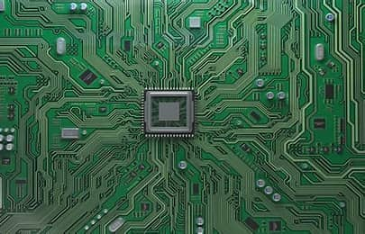
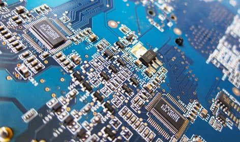
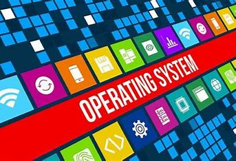

📌 Indice
🖥 Hardware
L'hardware comprende tutte le componenti fisiche di un computer. Si suddivide in:
- Hardware interno: Include il processore (CPU), la memoria RAM, il disco rigido (HDD o SSD), la scheda madre e l'alimentatore. Questi elementi lavorano insieme per eseguire i calcoli e memorizzare i dati.
- Hardware esterno (periferiche): Comprende dispositivi di input come tastiera e mouse, e di output come monitor e stampanti.
Si contrappone al software, che indica le componenti logiche del dispositivo.
Negli ultimi anni, i progressi nell'hardware hanno reso i computer sempre più potenti ed efficienti. Ad esempio, i processori multi-core permettono di eseguire più operazioni contemporaneamente, mentre gli SSD garantiscono una maggiore velocità rispetto agli HDD tradizionali.
🔧 Scheda Madre
La scheda madre è il componente principale del computer, che collega e permette la comunicazione tra tutte le altre parti.
Le sue componenti principali includono:
- Socket della CPU: Dove viene installato il processore.
- Slot RAM: Per inserire la memoria volatile del sistema.
- Chipset: Gestisce il flusso di dati tra il processore, la memoria e le altre componenti.
- Porte di espansione: PCIe per collegare schede video, schede audio e altre periferiche.
In questo caso specifico si occupa di ospitare e mettere in comunicazione tutti i componenti che vanno a comporre il PC,
oltre ad includere alcuni dei componenti necessari per il corretto funzionamento dello stesso.

🎮 Periferiche
Le periferiche sono dispositivi esterni che permettono di interagire con il computer.
- Periferiche di input: Tastiera, mouse, scanner, microfono.
- Periferiche di output: Monitor, stampante, altoparlanti.
- Periferiche di input/output: Touchscreen, hard disk esterni.
💾 Software
Il software è l’insieme di programmi che permettono al computer di funzionare.
- Software di sistema: Gestisce il funzionamento del computer (es. sistema operativo).
- Software applicativo: Programmi per attività specifiche (es. Word, Photoshop).
- Middleware: Software che permette la comunicazione tra sistemi diversi.
Senza il software, un computer sarebbe incapace di eseguire alcuna funzione.
Si tratta di una serie di istruzioni o programmi che indicano al computer di eseguire specifiche azioni
🖥 BIOS
Il BIOS (Basic Input/Output System) è un firmware che avvia il computer e gestisce le operazioni di base dell’hardware.
Funzioni principali:
- Avvia il sistema e testa i componenti hardware.
- Carica il sistema operativo.
- Gestisce le impostazioni della scheda madre.
Il BIOS contiene tutte le istruzioni per avviare il sistema operativo e per mettere in comunicazione l’hardware con il software. Per accedere al BIOS,
bisogna riavviare il computer e utilizzare l'esatta procedura per entrare o aprire il BIOS su tutti i computer

📱 Applicazioni
Le applicazioni sono programmi progettati per eseguire funzioni specifiche.
Tipi di applicazioni:
- Applicazioni desktop: Installate su PC (Microsoft Word, Photoshop).
- Applicazioni web: Funzionano tramite browser (Google Docs, Gmail).
- App mobile: Per smartphone e tablet (WhatsApp, Instagram).
Per funzionare richiede la presenza del sistema opertivo su cui il programma è stato sviluppato.
💻 Sistema Operativo
Il sistema operativo è il software che gestisce hardware e software del computer.
Esempi di sistemi operativi:
- Windows: Sistema più diffuso per PC.
- macOS: Ottimizzato per i dispositivi Apple.
- Linux: Open-source e altamente personalizzabile.
- Android e iOS: Per smartphone e tablet.
inizializza il sistema e assicura il corretto funzionamento della macchina. Il sistema operativo è un programma che, installato su di un dispositivo,
permette di gestirne tutte le risorse hardware e software.
I sistemi operativi sono software finalizzati alla gestione operativa delle risorse del sistema di un computer.

⬅ Torna all'Indice